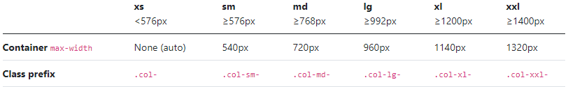

Elements är det som skrivs inuti taggar, såsom "h1" eller "div". Det finns flertal olika elements, alla för olika använding. "h" elementet står för Heading och har 6 olika varianter, h1-6. h1 taggen används oftast då man vill ha en rubrik, och h2 som underrubrik till h1 taggen.
HTML, HyperText Markup Language, är språket som kodare använder när de ska bygga upp hemsidor. Detta görs med markup symboler, "<" och ">", och det som hamnar mellan dessa taggar är vad som kallas för elements.
ID är något som används då man vill skriva css enbart för det ID:et, som man tidigare satt på någon tag genom att skriva "id="ID name"" efter elementet innan man stänger taggen. Detta kan vara bra att använda om man t.ex. vill att en viss p tag ska ha helt individuell css.
Class är likt det man gör med ID, men är mer för om man vill ha en grupp av t.ex. p taggar som man vill ska ha samma css. Detta kan både underlätta men också få allt att se mycket snyggare ut på ens hemsida. Ett exempel av detta i använding hade varit att göra en class i sin .css fil som man senare tilldelar till alla taggar man vill sätta den på. Därefter kommer alla de taggar man satte classen på att se likadana ut.
Meta tag är något som skrivs inuti head taggen i varje .html fil. I denna tag skrivs det metadata, data om datan. De två viktigaste är name="charset" name="viewport". Charset ser till så att hemsidan visar rätt typ av bokstäver och tecken. Viewport ser till så att hemsidan anpassas optimalt för alla enheters skärmar.
Bild från W3Schools
Responsiv eller mer specifikt responsiv webbdesign är målet att få sin hemsida att fungera för alla enheter. Det man pratar om då är att man vill att hemsidan ska anpassa sig automatiskt efter enhetens skärm. Bootstraps grid är t.ex. till för att det ska se så bra ut även om man har en liten skärm. Detta var också det jag pratade om ovan i Meta, viewport är ett sätt för webbläsaren att anpassa hemsidan för enhetens skärm.
HTTP står för HyperText Transfer Protocol och finns till för att vår webbläsare ska kunna skicka en request och få det den requestade skickat till sig. Det som ens webbläsare kommer att skicka requests på kan vara:
HTTPS står för HyperText Transfer Protocol Secure. Detta innebär bara att alla requests och saker man tar emot från hemsidan går igenom en krypteringsprocess innan något överförs. Denna krypteringsprocess görs utav ett protokoll kallat TLS, Transport Layer Security, vilket är en förbättrad version av det tidigare SSL, Secure Sockets Layer.
Datakompression är något som väldigt ofta används, t.ex. vid nedladdning då man vill att det ska gå snabbare för en användare att ladda ner. Datakompression är lätt förklarat som ändring eller minskning i bit-rate för att minska filstorlekar. Detta går ofta att se på t.ex. bilder eller videor då allt ser mer och mer pixligt ut.
Content Delivery Network, förkortat CDN, är en grupp av servrar som är utspridda runt om i världen. Målet med ett CDN är att minska latens när man är ute på internet. Det blir också lättare att hantera hardware failure eller DDoS attacker med ett CDN. Jag använde mig av Bootstraps CDN för att ladda in bootstrap.min.css för uppgiften.
Bild från Cloudflare
Local Bootstrap innebär helt enkelt att man laddar ner en bootstrap mapp och har den lokalt tillsammans med sin .html. Detta kan vara användbart när det kommer till saker som att ladda in hemsidan snabbare, eller ifall Bootstraps CDN krånglar. När man har bootstrap lokalt behöver hemsidan då inte skicka en request till deras CDN och fråga om bootstrap filen.
JQuery är ett JavaScript library som underlättar saker inom JavaScript när man utvecklar sina hemsidor.
Flexbox är likt bootstrap i det att det finns classer som går att skriva till ens taggar. Flexbox har en box model likt det av bootstraps grid för att få ens hemsida att se mer organiserad ut.
Grid system används för att kunna göra en bra och anpassbar layout för sin hemsida. Bootstrap 5.0's grid är gjord med mobil som prioritet och har classer med breakpoint för att ens sida ska vara så optimal som möjligt när det kommer till att vara responsiv.
Bild från W3Schools
Code snippets praktiskt taget templates. Code snippet för HTML finns redan i Visual Studio t.ex., men om man vill ha en snippet för något som inte är inbyggt går det att installera genom Visual Studio Marketplace.
Bild på en code snippet för html: